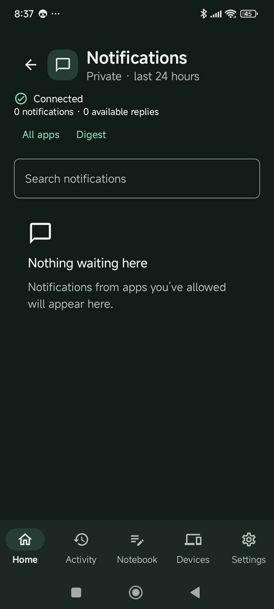

Stop means stop
Press Stop, or start talking, and Halo stops speaking and stops the task. What already happened is listed in Activity.
Available in the alphaHome / How Halo works
Halo can do things on your phone — set reminders, open apps, find things in your notes. Here is exactly how that works, and where you stay in charge.
HALO PRODUCT FLOW
Talk without typingA fresh microphone and live-transcription capture is pending device verification.

HALO PRODUCT FLOW
You choose before Halo actsThe live approval sheet still needs an authenticated device capture.
HALO PRODUCT FLOW
Stop while a task is runningThe current in-progress task screen has not yet been captured.

When an app doesn’t tell Halo whether something worked, Halo says so. It never shows a success it can’t check.
Press Stop, or start talking, and Halo stops speaking and stops the task. What already happened is listed in Activity.
Available in the alphaWhen something fails, Halo offers one next step — try again, give a permission, or pick another way — not a wall of error text.
Available in the alphaHalo asks for Android permissions only when a task needs them, and you can review or remove them in Settings.
Available in the alphaHalo can also be Android’s assistant: call it up over any app, ask about what’s on screen, and hand off to the full app when you need more. Each part of this is being tested on real phones before we show it as working.
In developmentHALO PRODUCT FLOW
Assist in other appsAndroid assistant overlays are still being validated on physical phones.
Halo can summarise notifications from the apps you choose. Nothing is read until you switch it on.
Available in the alpha